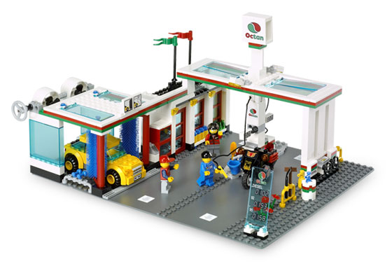

Andriy Nechytailov
SDL, Web developer.
The Angular Way
AngularJS learning curve

 v1.0
We started in early 2013...
v1.0
We started in early 2013...
 ..and now everything is fine
..and now everything is fine
 Most juniors make common mistakes when use AngularJS
Most juniors make common mistakes when use AngularJS
 But experienced developers make them too
Types of improvements
But experienced developers make them too
Types of improvements

 Performance
Maintenance
Performance
Maintenance
 Tip 1. Anonymous functions
Do not use anonymous functions!
Using named functions produces more readable code, is much easier to debug, and reduces the amount of nested callback code
Tip 2. Dependencies
Use a minification-safe approach
Tip 1. Anonymous functions
Do not use anonymous functions!
Using named functions produces more readable code, is much easier to debug, and reduces the amount of nested callback code
Tip 2. Dependencies
Use a minification-safe approach
Use to manually identify your dependencies
Order dependencies from global to specific
Tip 3. ControllerAs syntax
 Use a capture variable for this when using the controllerAs syntax
This syntax helps to keep controller interface in one place and avoid scope overloading. is abbreviation from ViewModel.
Tip 4. Controller logic and external calls
Use a capture variable for this when using the controllerAs syntax
This syntax helps to keep controller interface in one place and avoid scope overloading. is abbreviation from ViewModel.
Tip 4. Controller logic and external calls
 Move reusable logic and externals calls to services
Leave in controllers only logic related to view. Keep controller as clean as possible.
Tip 5. Route resolve
Move reusable logic and externals calls to services
Leave in controllers only logic related to view. Keep controller as clean as possible.
Tip 5. Route resolve
 Use resolve to prepare data for your controller
Data will be loaded before controller initialization, so you [...TODO]
Tip 6. DOM manipulations
Move all DOM manipulation from controller to directives
Controller is needed for linking business logic and view so that there should not be any DOM manipulation logic.
Use resolve to prepare data for your controller
Data will be loaded before controller initialization, so you [...TODO]
Tip 6. DOM manipulations
Move all DOM manipulation from controller to directives
Controller is needed for linking business logic and view so that there should not be any DOM manipulation logic.
Try to use templates, CSS, animations to avoid DOM manipulations because they are difficult to test and support
Tip 7. View data bindings
 Use pre-calculated variables instead of expressions unless you cannot
Each binding creates watcher which will be recalculated during each digest loop
Tip 8. View data bindings
Use one-time binding for variables which will not be changed
One-time binding will remove watcher after loading data.
Tip 9. Ng-Model
Use pre-calculated variables instead of expressions unless you cannot
Each binding creates watcher which will be recalculated during each digest loop
Tip 8. View data bindings
Use one-time binding for variables which will not be changed
One-time binding will remove watcher after loading data.
Tip 9. Ng-Model
 Use ngModelOptions when you work with ng-model
will help you to avoid writing redundant code and improve performance.
Use ngModelOptions when you work with ng-model
will help you to avoid writing redundant code and improve performance.
Ther are next options:
Tip 10. Ng-Show vs Ng-If
 You may need ng-show for an elements that toggles on an off often, but for 95% of the time, ng-if is a better way to go.
will render an element, and use to hide it,
You may need ng-show for an elements that toggles on an off often, but for 95% of the time, ng-if is a better way to go.
will render an element, and use to hide it,
will actually removes the element from DOM, and will re-create it, if it’s needed.
Tip 11. Ng-repeat
There are 2 point to pay attention:
- If you have to use ng-repeat with long lists use infinite scrolling or pagination
- Use track by whenever possible
Tip 12. jQuery
Use jQuery as less as possible
Most of jQuery operations could be replaced by native AngularJS functionality.
It will produce more effective and clean code.
Tip 13. Communication
Do not use $parent, $$childHead and similar for communication.
Use events instead.
Using and similar add chaos in your code, make it unsupportable and create hidden bugs.
Scope elements which starts with '' are Angular service operators so do not use them.
as well, because they are slow and provide private data to public.
Tip 14. Communication between directives
Use controller when you want to expose an API to other directives. Otherwise use link.
Tip 15. Promises
Use promise chains instead of functions with callbacks
AngularJS has native promises support.
Promises help to organize your code in better way.
Tip 16. Promises
Use promises correctly :)
Read promises documentation to get all power of it!
Tip 17. Native Angular features
Use angular features instead of "wheels" (for example, order by)
Before write some extra code think if this feature is already implemented in the framework.
Note: in rare cases native Angular features are non-efficient because of generic nature, but in most cases they are.
Tip 18. Primitives binding
Avoid primitives binding
Using binding without dot can lead to errors at some point
Tip 19. Services

General recommendations on Angular services
- Use factory everywhere instead of mixing service/factory
- Do not leak information about data sources
- Keep services stateless
- Handle errors inside of service
Tip 20. Clear watches
Do not forget to clean up watchers, intervals, timeouts and variables
return deregistration functions so use them if possible
Tip 21. Other
A lot of tips are left:
- Compile vs link
- Understanding of digest loop
- Decorators
- Constants and values vs $rootscope
- Broadcast/emit
- Unit testing
- and other...
And remember!
If something becomes too complicated
you do something wrong
Stop and think one more time!
Some useful links
https://github.com/johnpapa/angular-styleguide
https://mgechev.github.io/angularjs-style-guide/
Questions?
https://github.com/Ne4istb/AngularJsBestPracticesSpeech
https://slides.ne4istb.com/angular-way
 Ne4istb
Ne4istb
 +AndreyNechitailov
+AndreyNechitailov
 @anechytailov
@anechytailov